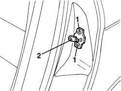
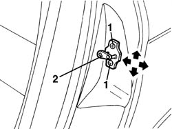

7010B14 rear side door catch striker r r
- Path
- Procedures > 70 FITTINGS > 7010 PASSENGER COMPARTMENT REAR SIDE DOORS > 7010B rear door mechanical locks > 7010B14 rear side door catch striker r r
- Kind
- repair procedure (removal / refitting; the operation number is the code)
- Applies to
- all engines; all production periods
- Interactive page
- https://sloeber94.github.io/elrnDB-a156/en/#/3238645
Applies to: all engines; all production periods
 Removing
Removing
 Refitting
Refitting1. Unscrew the striker screws.
2. Remove the striker.

Applies to: all engines; all production periods
Refitting
RemovingCheck if the striker is not damaged.
Place the striker.
1. Screw the screws without tightening them.
2. Move the striker in the right location exploiting the screw slotted holes.
For a right striker adjustment it could be necessary to insert proper thicknesses.
Arrows show the permitted movements for the adjustment.

Applies to: all engines; all production periods
Tighten the screws.
Check the right fit between striker and door lock and the alignment at closed door.